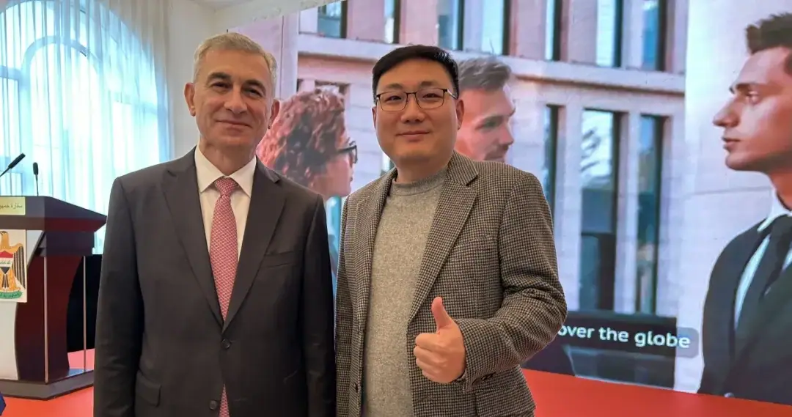

EXCHANGE-05
国际交流 · INTERNATIONAL EXCHANGE
走进伊拉克驻华大使馆｜中伊（伊拉克）产业合作与战后重建市场交流
Inside the Iraqi Embassy — post-war reconstruction and China–Iraq industrial cooperation.

活动概述
海鑫汇走进伊拉克驻华大使馆，助力伊拉克战后重建与产业合作。伊拉克驻华大使艾哈迈德·贝尔瓦利表示， 伊中战略伙伴关系持续深化，2024年双边贸易额已突破550亿美元，中国企业积极参与伊拉克基础设施建设项目， 助力伊政府推进优先发展计划。
战略对接与在建项目
两国正协同推动"伊拉克发展之路"与"一带一路"倡议对接，聚焦区域联通、供应链安全与产业本土化。 2019年伊中框架协议为中方参与伊拉克基建现代化提供重要支持，目前包括千所学校、法乌炼油厂、纳西里耶机场、 巴格达交通工程等多个项目正稳步实施。
投资环境优化与优惠政策
伊拉克政府通过金融、法律和经济改革不断优化投资环境，为投资者提供税收豁免、资金自由转移、项目全所有权、 法律保障、优惠用地及一站式服务等多项优惠，覆盖农业、工业、旅游、医疗、住房、能源、交通、基建等领域， 未来还将扩展至科技、金融、教育等行业。
GTN 判断视角
伊拉克的吸引力不在"市场有多大"，而在"重建窗口期"——战后重建释放的是十年一遇的确定性基建订单。风险也同样真实：安全、结算与本地合规缺一不可。对中方企业而言，借力伊中框架协议与大使馆通道，把政治互信转化为可落地的项目入口，是切入这片市场最稳的路径。
本文内容整理自海鑫汇活动记录，首发于海鑫汇官方公众号（2025年10月）。 查看公众号原文 →
想评估伊拉克战后重建市场的切入机会与风险？先做一次免费首诊判断。
预约免费首诊 →